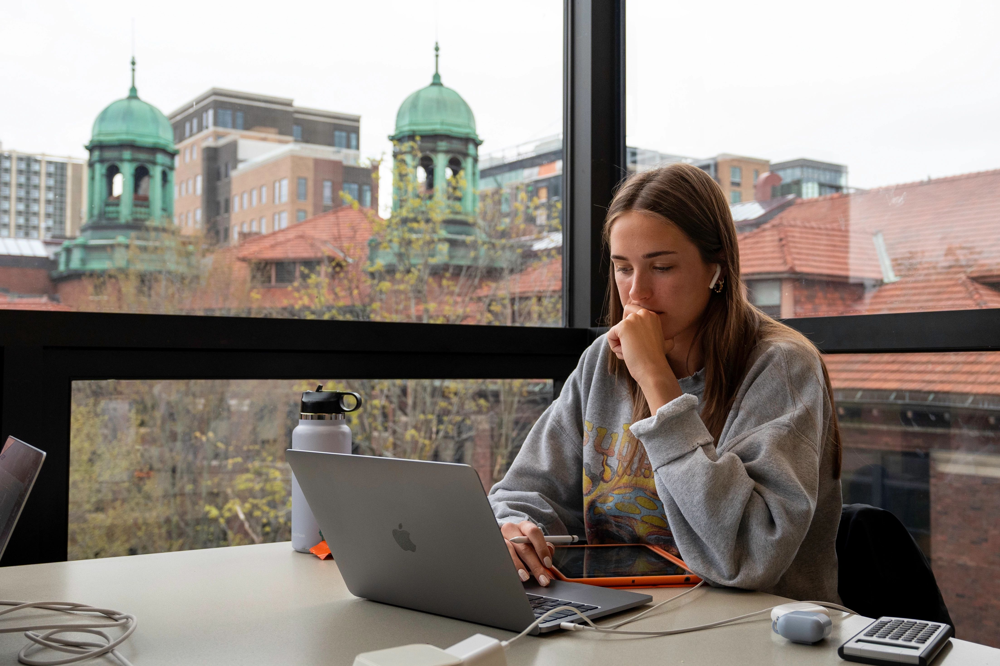
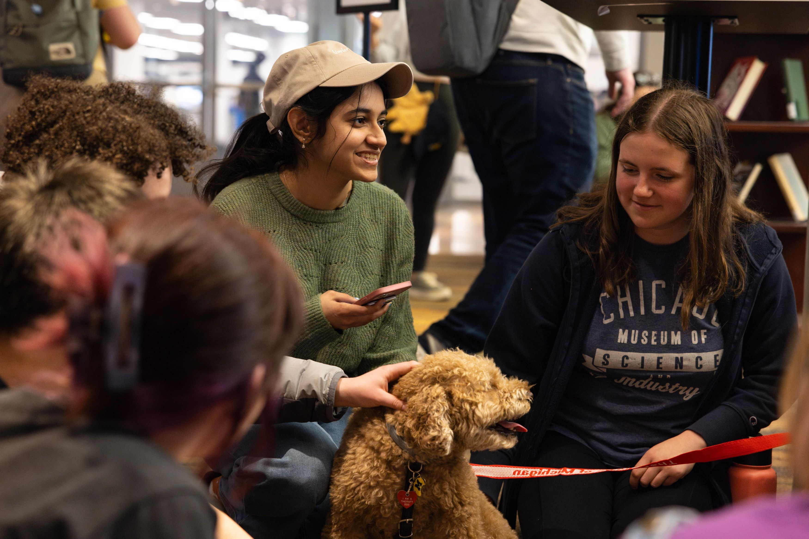

Welcome to Counseling and Psychological Services (CAPS)!
University Health & Counseling (UHC) supports the health and well-being of the campus community. We are inspired to help students realize their potential, cope with the stresses of life, work productively, and connect meaningfully with others.
CAPS is committed to creating an environment based on our values of multicultural, multi-disciplinary and multi-theoretical practices that allow our diverse student body to access care, receive high quality services and take positive pathways to mental health. We are happy to offer both in-person and virtual services.
Our Front Desk (Michigan Union 4th Floor) is open and ready to help support you -- staff members are available throughout the day to assist you with your needs to answer questions, and get you to the right place. We can be reached by phone at: (734)764-8312.
Scope of Services
In support of the educational goals of the University and the Division of Student Life, Counseling and Psychological Services (CAPS) provides a range of clinical, preventative, and training services consistent with the practices and standards of a nationally accredited university counseling center. CAPS is committed to creating a safe and supportive environment based on our multicultural, multi-disciplinary and multi-theoretical values and practices that allow our diverse student body to access care, to receive high quality services, and to take positive pathways to mental health.
Individual Peer Counseling
Peer counseling can offer students a relaxed and laid back place to vent and find support. We are able to listen and relate, as well as give you a judgment-free space to talk out your thoughts. Students have reported appreciating having someone outside of their immediate circle to talk to as well as someone who is able to support them in working through personal challenges.
Uwill Teletherapy Services
Uwill is an addition to CAPS services that provides students with video, phone, chat, and message sessions with licensed mental health professionals at no cost. This additional counseling option offers students greater flexibility and allows CAPS to expand its service capacity.
First Year Guide
U-M Counseling & Psychological Services (CAPS) welcomes all of our 1st year students including those who are living on campus and those who are located remotely. We are happy to launch a new resource created exclusively for you:“Go Blue! A New Student’s Guide to Surviving and Thriving at U-M: Mental Health Tips.”
Togetherall
Recognizing that some students who are feeling isolated, depressed, or anxious may find it challenging to connect with our resources and verbally express their needs, Counseling and Psychological Services (CAPS) is pleased to announce the piloting of Togetherall, an online, anonymous peer-support tool available for free to our students. Togetherall is a clinically moderated, online peer-to-peer mental health community that reaches and empowers a diverse population of students to anonymously seek and provide support